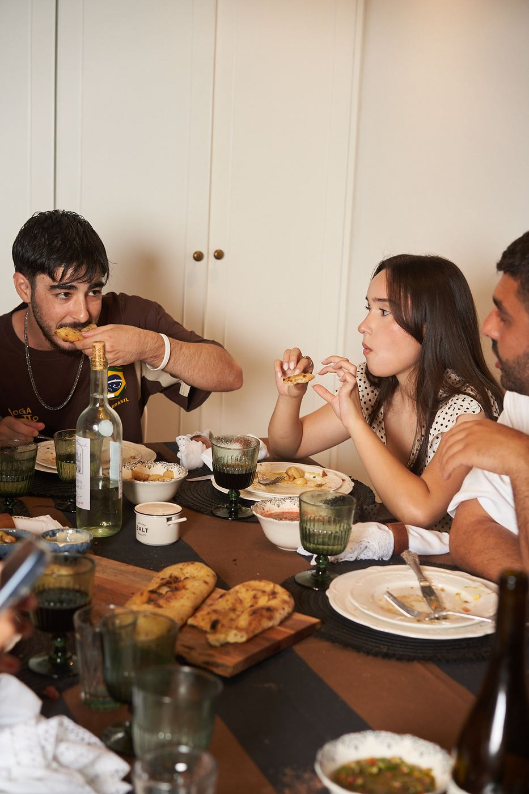

שף פרטי או קייטרינג? איך בוחרים לאירוע בבית

כשמתכננים אירוע בבית, השאלה הראשונה היא בדרך כלל מי יאכיל את כולם. שתי התשובות הנפוצות הן קייטרינג ושף פרטי - והן שונות יותר ממה שנדמה.
ההבדל הבסיסי
קייטרינג מכין את האוכל מראש, במטבח שלו, ומביא אותו מוכן או כמעט מוכן. שף פרטי מבשל אצלכם, במקום, והמנות יוצאות לשולחן ברגע שהן מוכנות. מההבדל הזה נגזר כמעט כל השאר.
טריות ומרקם
יש מאכלים שלא אוהבים לחכות: דג נא שנפרס רגע לפני ההגשה, סטייק שצריך לנוח דקות ספורות ולא שעה, לחם שיוצא חם מהתנור, רוטב שמתחבר לצלחת ברגע האחרון. בבישול במקום, המנות האלה מגיעות לשולחן כמו שהן אמורות להיות.
התאמה אישית
קייטרינג עובד לרוב עם תפריטים קבועים שאפשר לבחור מתוכם. אצל שף פרטי התפריט נכתב מהתחלה סביב האורחים שלכם - מה הם אוהבים, מה הם לא אוכלים, ומה אתם רוצים שיזכרו מהערב.
החוויה
שף פרטי הוא חלק מהערב. האורחים רואים את ההכנות, שומעים על המנה שמונחת מולם ומרגישים שמשהו קורה בשבילם. זה הבדל שקשה למדוד, אבל קל מאוד להרגיש.
אז מה מתאים לכם?
קייטרינג מתאים יותר כש־
- מדובר בהרבה מאוד אורחים, או באירוע בסגנון מזנון.
- אין במקום מטבח שאפשר לעבוד בו.
- האוכל הוא תוספת לאירוע, לא הלב שלו.
שף פרטי מתאים יותר כש־
- האורחים יושבים סביב שולחן, והארוחה היא מרכז הערב.
- חשוב לכם תפריט אישי, עם מנות שמוגשות טריות.
- אתם רוצים ליהנות מהאירוע שלכם, ולא לנהל אותו.
שאלות ששווה לשאול לפני שמזמינים
- מה בדיוק כלול במחיר - חומרי גלם, הגשה, כלים, צוות?
- אפשר לראות תמונות אמיתיות מאירועים קודמים?
- איך מטפלים באלרגיות ובהעדפות תזונתיות?
- כמה זמן לפני האורחים מגיעים, ומה צריך להכין מראש?